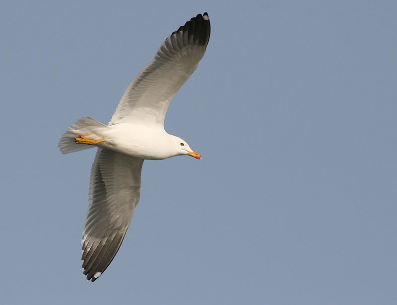

Gegharkunik Province
Gegharkunik is a province of Armenia. Its capital and largest city is the town of Gavar.
Gegharkunik Province is located at the eastern part of Armenia, bordering Azerbaijan. It includes the exclave of Artsvashen, which has been under Azerbaijani occupation since the First Nagorno-Karabakh war. With an area of 5,348 km2 (2,065 sq mi), Gegharkunik is the largest province in Armenia. However, approximately 24% or 1,278 km2 (493 sq mi) of its territory is covered by Lake Sevan, the largest lake in Transcaucasia and a major tourist attraction of the region.
The Yerevan-Sevan-Dilijan republican highway runs through the province.